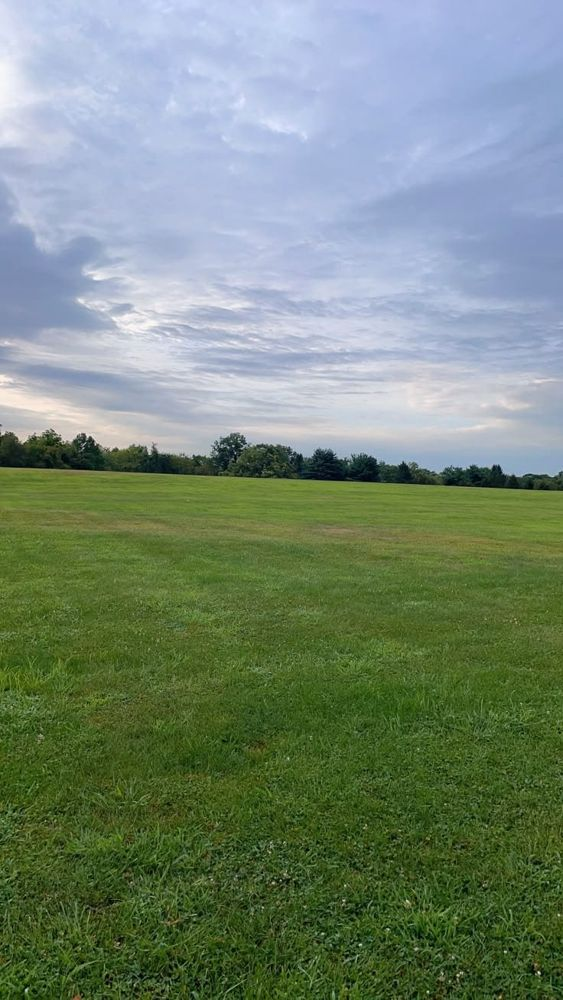

Education
- BSc. Environmental Science, JKUAT (2025 to present)
- Green Valley High School (completed 2024)
Skills and Competencies
- Problem solving
- Adaptability
- Time management
- Teamwork
- HTML and CSS (beginner)
Research Interests
- Wildlife conservation
- Biodiversity
- Environmental pollution
- Climate change
- Ecosystem management
- Sustainable development
Academic Projects and Certifications
| Project or Certificate | Year | What I learned |
|---|---|---|
| Professional CV (ICS 2216 Lab 1) | 2026 | Formatting a professional document in Word |
| Portfolio Website (ICS 2216 Lab 2) | 2026 | HTML, CSS, hosting and relational databases |